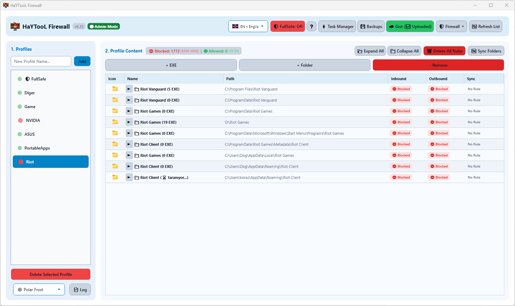
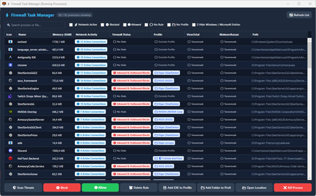

Ağınızı Tek Tıkla Kontrol Edin & Güvende Kalın.
Karmaşık Windows Güvenlik Duvarı menülerinde kaybolmayın. Akıllı özyinelemeli klasör tarama ve Zero-Trust FullSafe modu ile tüm oyunlarınızı ve yazılımlarınızı saniyeler içinde yönetin.
Neden HaYTooL Firewall?
Geleneksel güvenlik duvarı kuralları yerine akıllı, hafif ve kullanıcı odaklı çözümler.
FullSafe Sıfır Güven (Zero-Trust)
FullSafe modu açıldığında tüm giden trafik engellenir (Default-Deny). Yalnızca onayladığınız güvenli profillerdeki uygulamalar ağa çıkabilir.
Özyinelemeli Akıllı Klasör Tarama
Klasörü sürükleyip bırakın; alt dizinlerdeki tüm .EXE'ler otomatik keşfedilir, gerçek zamanlı sayaçla listelenir ve anında senkronize edilir.
Profil & Sürükle-Bırak Yönetimi
Oyunlar, İş Uygulamaları veya Güvenlik kategorileri oluşturun; tek tıkla toplu kurallar uygulayın ve profilleri aktif/pasif yapın.
Modern Koyu & Açık Mod
Yüksek okunabilirlik ve performans sunan, dinamik temalı sistem tepsisi menüsüyle entegre Koyu ve Açık tema modları.
Yerel 7z & GitHub Gist Bulut Yedekleme
İnsanca okunabilir INI dosyası, otomatik 7z arşiv rotasyonu ve özel Gist tokeninizle bilgisayarlar arası bulut senkronizasyonu.
Kapsamlı CLI & IPC Entegrasyonu
Terminal üzerinden komut satırıyla profilleri ve FullSafe'i yönetin; açık GUI penceresi anında canlı güncellensin.
Görev Yöneticisi & Tehdit Analizi
Aktif süreçleri RAM ve ağ bağlantılarıyla izleyin; VirusTotal v3 ve MalwareBazaar ile çift motorlu tarama yapın, tek tıkla engelleyin.
Bağımsız Hızlı Başlatıcı & taskmgr
Ana pencereyi açmadan doğrudan Görev Yöneticisi'ni başlatmak için "HaYTooL Firewall.exe taskmgr" komutu veya hazır kısayolu kullanın.
Windows Başlangıç Yöneticisi (Startup)
Kayıt defteri, UWP ve Görev Zamanlayıcı başlangıç girdilerini listeleyin; StartupApproved desteğiyle devre dışı bırakın veya silin.
Windows Hizmetleri (Services)
Sistem servislerini doğrudan yönetin; Başlat/Durdur, başlangıç türünü ayarlayın ve şüpheli servisleri güvenlik duvarında engelleyin.
Canlı Başlangıç & Servis Kalkanı
Dışarıdan eklenen yeni başlangıç öğelerini ve servisleri anında yakalayan, onay penceresiyle engelleyen gerçek zamanlı koruma kalkanı.
Canlı Uygulama Arayüzü
Yeni 10 tema mimarisi ve çift motorlu Görev Yöneticisi ile yenilenen tasarım


# HaYTooL Firewall CLI & Scripting Examples
haytool-firewall --fullsafe on # Zero-Trust modunu tek komutla aç
haytool-firewall --profile "Oyunlar" --block # Oyunlar profiline anında blokaj uygula
haytool-firewall taskmgr # Bağımsız Çift Motorlu Görev Yöneticisini başlatFrequently Asked Questions (FAQ) & Architecture
In-depth technical architecture, Zero-Trust security mechanics, and workflow documentation.
🛡️ What is FullSafe Zero-Trust Mode & How Does It Secure Windows?
FullSafe activates a strict Default-Deny outbound policy. Traditional firewalls allow unknown background processes to silently phone home. In FullSafe mode, every outbound connection is blocked by default at the Windows Filtering Platform layer, granting internet access exclusively to executables verified in your active profiles.
⚡ How Does Recursive Directory Scanning Work?
Modern games and development IDEs distribute executables across hundreds of nested subdirectories. HaYTooL Firewall recursively traverses directory trees, discovers every standalone and sub-process binary, sanitizes paths, and synchronizes rules into Windows Firewall in a single click.
🔍 Dual-Engine Threat Intelligence: VirusTotal & MalwareBazaar
The integrated standalone Task Manager calculates SHA-256 process hashes on the fly and queries both VirusTotal v3 and MalwareBazaar intelligence databases. Suspicious network consumers can be inspected and blocked instantly without launching third-party antivirus suites.
🚀 Portable, Lightweight & Zero Telemetry Architecture
Written in native C# / WPF without bloated runtimes or persistent background daemons. Settings are stored transparently in human-readable INI format with automated 7z rotation backups. Zero background overhead, maximum privacy.